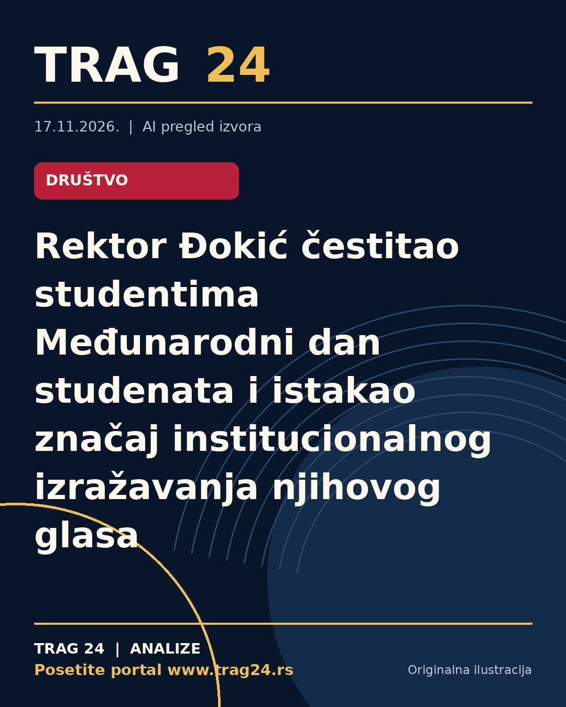

Rektor Đokić čestitao studentima Međunarodni dan studenata i istakao značaj institucionalnog izražavanja njihovog glasa

ŠTA SE DOGODILO
Rektor Univerziteta u Beogradu, Vladan Đokić, uputio je čestitku studentima povodom Međunarodnog dana studenata. On je tom prilikom istakao da njihov glas dobija najvažniji institucionalni oblik, što simbolizuje njihov aktivni angažman unutar društva i univerzitetske zajednice.
HRONOLOGIJA
U tekstovima iz različitih izvora navodi se da je čestitka upućena studentima upravo na dan kada je održana prva konstitutivna sednica Skupštine Srbije nakon izbora, na kojima je Studentska lista ostvarila zapažen uspeh. Ova paralela nije detaljnije obrazložena, ali se navodi kao kontekst u kojem je rektor Đokić uputio svoju poruku.
ŠTA NAVODE IZVORI
Svi izvori navode iste ili slične reči rektora Đokića, koji je istakao energiju, istrajnost, solidarnost i želju studenata da učestvuju u oblikovanju društva. On je pozvao da njihov glas bude slobodan i jasno izražen unutar Univerziteta, mesta kritičkog i kreativnog angažmana. Takođe, izvori povezuju ovu poruku sa institucionalnim afirmisanjem studentskog glasanja i uticaja u društvenim procesima.
ŠTA JE POTVRĐENO
Potvrđeno je da je rektor Đokić čestitao studentima Međunarodni dan studenata i naglasio značaj njihovog institucionalnog izražavanja. Potvrđeno je i da se ovo dešava u kontekstu Skupštine Srbije, neposredno nakon izbornih rezultata gde je Studentska lista ostvarila uspeh.
ŠTA NIJE POTVRĐENO
Ni jedan izvor ne daje detalje o tome na koji konkretan način glas studenata dobija institucionalni oblik, niti o bilo kakvim konkretnim odlukama ili promenama koje su donete. Takođe, podaci o daljim koracima ili događajima unutar Univerziteta ili društva u vezi sa ovom temom nisu pruženi.
ŠTA OSTАJE OTVORENO: Ostaje nejasno kako će se konkretno izraziti institucionalni oblik glasa studenata koji rektor spominje i koje su dalje planirane aktivnosti Univerziteta ili studentskih organizacija u tom pogledu. Takođe, detalji o daljim uticajima na političke i društvene procese ostaju nepoznati.
Izvori
- https://www.blic.rs/vesti/politika/rektor-djokic-cestitao-studentima-danas-vas-glas-dobija-institucionalni-oblik/44ezx2c
- https://nova.rs/vesti/drustvo/rektor-djokic-studentima-danas-vas-glas-dobija-institucionalni-oblik/
- https://insajder.net/prenosimo/rektor-dokic-cestitao-medunarodni-dan-studenata-upravo-danas-vas-glas-dobija-najvazniji-institucionalni-oblik
Ova analiza je pripremljena uz pomoć veštačke inteligencije na osnovu javno dostupnih izvora. Navodi izvora nisu nužno nezavisno potvrđeni.